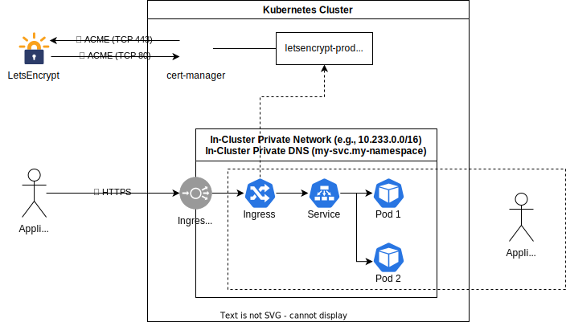
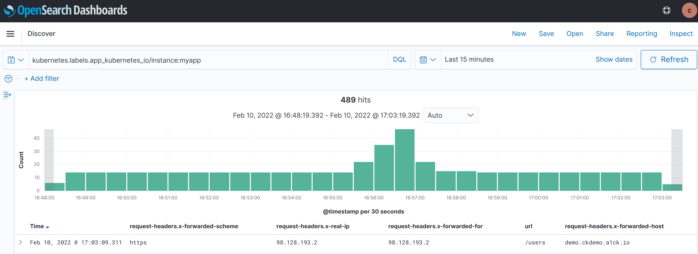

Network Model¶
Note
This section helps you implement ISO 27001, specifically:
- A.10.1.2 Key Management
- A.13.1.1 Network Controls
- A.13.1.2 Security of Network Services
- A.13.1.3 Segregation in Networks

The diagram above present a useful model when reasoning about networking in Compliant Kubernetes.
Note
This is just a model and not an architectural diagram. Under the hood, things are a lot more complicated.
Private Network¶
Your application Pods, as well as Pods of additional services, can communicate on a secure private network, via RFC1918 private IP addresses. It is analogous to a VPC in VM-based workloads.
In Compliant Kubernetes, it is the responsibility of the administrator to ensure the in-cluster private network is secure and trusted, either by performing an infrastructure audit or deploying Pod-to-Pod encryption.
You should use NetworkPolicies to segregate your Pods. This improves your security posture by reducing the blast radius in case parts of your application are under attack.
Example
Feel free to take inspiration from the user demo.
Private DNS¶
The private network also features a private DNS. A Service my-svc in the namespace my-namespace can be accessed from within the Kubernetes cluster as my-svc.my-namespace.
IP addresses of Pods are not stable. For example, the rollout of a new container image creates new Pods, which will have new IP addresses. Therefore, you should always use private DNS names of Services to connect your application Pods, as well as to connect your application to additional services.
Ingress¶
Your application users should never ever access the private network directly. Instead external access is enabled by creating Ingress objects. Compliant Kubernetes already comes with cert-manager and is already configured with a ClusterIssuer. A secure ACME protocol is used to issue and rotate certificates using the LetsEncrypt public service.
You only need to create an Ingress object with the right metadata.annotations and spec.tls, as exemplified below:
apiVersion: networking.k8s.io/v1
kind: Ingress
metadata:
name: myapp-ck8s-user-demo
annotations:
cert-manager.io/cluster-issuer: letsencrypt-prod
kubernetes.io/ingress.class: nginx
## Uncomment the line below to implement source IP allowlisting.
## Blocklisted IPs will get HTTP 403.
# nginx.ingress.kubernetes.io/whitelist-source-range: 98.128.193.2/32
spec:
rules:
- host: "demo.example.com"
http:
paths:
- path: /
pathType: Prefix
backend:
service:
name: myapp-ck8s-user-demo
port:
number: 3000
tls:
- hosts:
- "demo.example.com"
secretName: demo.example.com-tls
Example
Feel free to take inspiration from the user demo.
Important
The DNS name in spec.rules[0].host and spec.tls[0].hosts[0] must be the same as the DNS entry used by your application users. Otherwise, the application users will get a "Your connection is not private" error.
Important
Some load-balancers fronting Compliant Kubernetes do not preserve source IP. This makes source IP allowlisting unusable.
To check if source IP is preserved, check the HTTP request headers received by your application, specifically x-forwarded-for and x-real-ip. The user demo logs all HTTP request headers, as shown in the screenshot below.

Demarcation of Responsibilities¶
You are responsible for:
- creating Pods (via Deployments), Service and Ingress;
- segregating the private network via NetworkPolicies;
- configuring Ingresses as required to enable HTTPS encryption.
The user demo already showcases the above.
The Compliant Kubernetes administrator is responsible for:
- ensuring cert-manager works and is configured correctly;
- ensuring ClusterIssuers exist and are configured correctly;
- ensure the private network is secure or trusted.